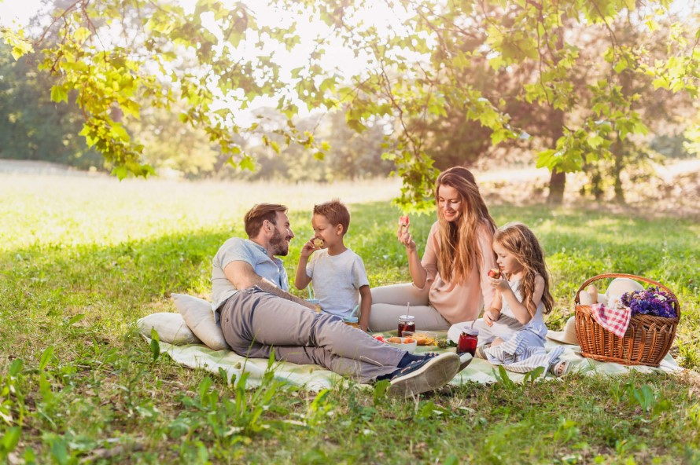

Turfmarkt
Turfmarkt, nestled in the charming Haarlemmerhoutkwartier neighborhood of Haarlem, is a picturesque canal-side area that offers a delightful weekend escape. If you've recently moved to the neighborhood and are seeking a unique way to spend your weekend, Turfmarkt has just the answer. Here, you can embark on relaxing channel cruises that allow you to soak in the serene beauty of Haarlem's canals. It's an ideal activity for families with children who have a penchant for water adventures. As you glide along the tranquil waterways, you'll be treated to scenic views of historic architecture and picturesque bridges, making it a perfect weekend outing that combines leisure and exploration in the heart of Haarlemmerhoutkwartier.
Hertenkampweg
Hertenkampweg, situated in the enchanting city of Haarlem, is a haven for those seeking respite from the daily grind. If you're in need of a break from work and yearning for quality family time, this idyllic location is the perfect choice for a leisurely picnic. With a blanket, some delicious food, and your loved ones by your side, you can relish the peaceful ambiance of Hertenkampweg. Moreover, if you're a dog owner, this spot becomes even more appealing as it's a pet-friendly haven where your furry friend can join in the fun. Surrounded by lush greenery and a serene atmosphere, Hertenkampweg is a picturesque destination that invites you to unwind, savor the moment, and create cherished memories with your family in the heart of Haarlem..
Speeltuin
Speeltuin, located at Welgelegenstraat 1, 2012 JC Haarlem, is a delightful playground designed to provide endless fun and excitement for children. This welcoming space is always open, offering a safe and enjoyable environment for kids to explore, play, and make lasting memories. With a variety of play structures, swings, slides, and interactive features, Speeltuin ensures that children of all ages can engage in active play and social interaction. It's a beloved destination for families in Haarlem, where youngsters can unleash their imaginations and boundless energy, fostering both physical and social development. Whether it's a sunny day or a cloudy afternoon, Speeltuin is a go-to spot for quality outdoor playtime and family enjoyment in Haarlem.
Kinderboerderij de Houthoeve
Kinderboerderij de Houthoeve, nestled in the heart of Haarlem, is a haven for young explorers eager to embark on a journey of discovery. It's a place where children take their first steps in getting to know the world around them. At this cherished farm, not only can youngsters marvel at a variety of animals, but they can also immerse themselves in the wonders of nature, making it an ideal destination for family outings, even on a rainy day in Holland. With a delightful menagerie of friendly creatures to meet and interact with, children have the opportunity to learn about the animal kingdom firsthand. Kinderboerderij de Houthoeve fosters a deep appreciation for the natural world while providing a sheltered environment where families can bond, explore, and make memories together in Haarlem.
Haarlemmerhoutkwartier Family Picnics
Haarlemmerhoutkwartier, a picturesque neighborhood in the heart of Haarlem, offers families the perfect setting for delightful outdoor family picnics. With its abundant green spaces and parks, this neighborhood beckons parents and children alike to spend quality time together in the lap of nature. One of the favorite spots for these leisurely gatherings is Haarlemmerhout Park, where you can spread a picnic blanket, unpack a delicious meal, and savor the beauty of the great outdoors. Children can run and play on the open lawns, while parents relax and enjoy the fresh air.
The key to a successful family picnic is preparation. Pack a basket with a variety of treats and refreshments to satisfy everyone's taste buds. Bring along outdoor games or sports equipment to keep the kids engaged in fun activities. As you dine al fresco, take in the serene surroundings, listen to the chirping birds, and appreciate the tranquility of Haarlemmerhoutkwartier.
Remember to be respectful of the environment by cleaning up after your picnic, leaving no trace behind. Haarlemmerhoutkwartier's parks are a treasure for the community, and preserving their natural beauty is essential.
So, if you're looking to create cherished family moments and enjoy the simple pleasures of life, consider a family picnic in Haarlemmerhoutkwartier. It's an opportunity to bond, relax, and relish the beauty of nature right in the heart of Haarlem.

Haarlemmerhout Forest Playground
Within the beautiful Haarlemmerhout Forest, there's a dedicated playground that offers an array of exciting activities for children. Equipped with swings, climbing frames, slides, and more, this playground provides a safe and engaging environment for kids to play and interact with one another. Surrounded by nature, it's a fantastic spot for families to enjoy quality outdoor time together while children burn off energy and make new friends.